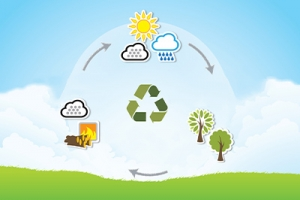

Biomasa – oznacza ulegającą biodegradacji frakcję produktów, odpadów i pozostałości z produkcji rolnej, leśnej i powiązanych gałęzi przemysłu, w tym rybołówstwa i akwakultury.
Energię zawartą w biomasie można wykorzystać dla celów człowieka.
Polega to na przetwarzaniu na inne formy energii poprzez spalanie biomasy lub spalanie produktów jej rozkładu.
W wyniku spalania uzyskuje się ciepło, które może być przetworzone na inne rodzaje energii, np. energię elektryczną.

Źródło6
Do celów energetycznych wykorzystuje się najczęściej:
-drewno o niskiej jakości technologicznej oraz odpadowe;
-słomę i inne odpady produkcji rolniczej;
-odchody zwierzęce;
-osady ściekowe;
-wodorosty uprawiane specjalnie w celach energetycznych;
-odpady organiczne, np. wysłodki buraczane, łodygi kukurydzy, trawy, lucerny;
-oleje roślinne i tłuszcze zwierzęce.